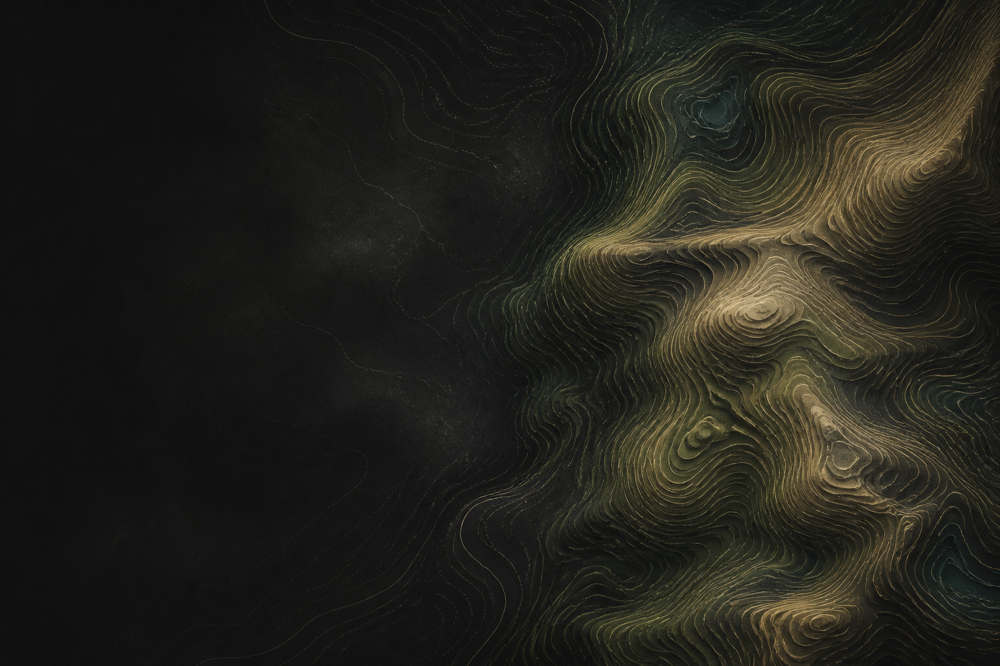
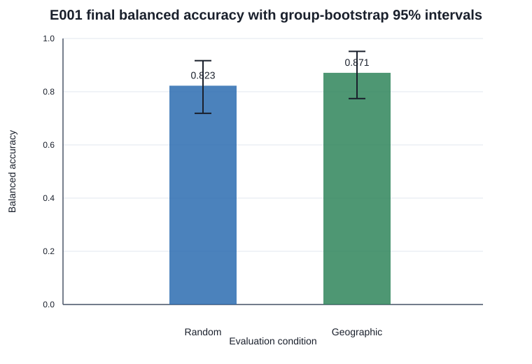
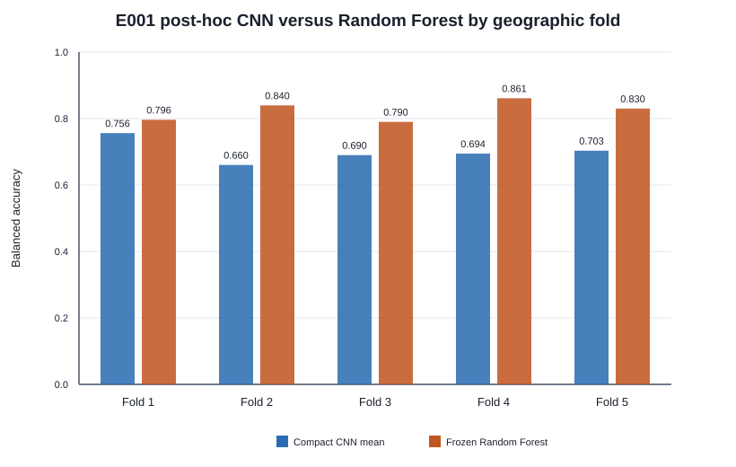
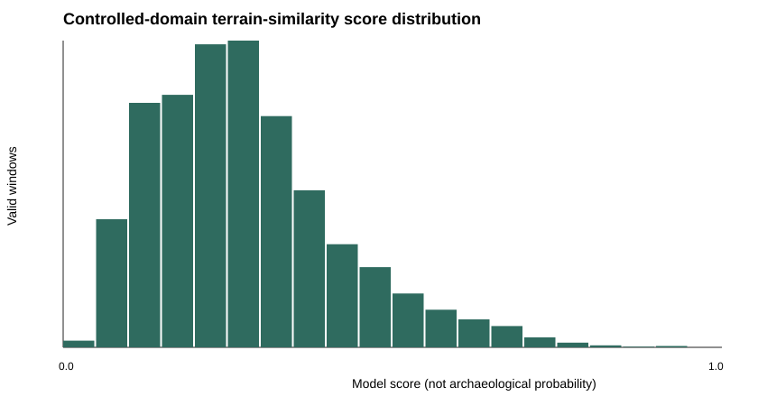

Confirmatory geographic holdout
87.1% balanced accuracy · n=62 · two pre-specified blocks
Student-led research · E001
Responsible geospatial AI for archaeological terrain research.
ArchaeoAI investigates whether machine learning can recognize documented earthwork patterns in LiDAR-derived terrain—while testing geographic generalization and keeping sensitive locations private.
Research prototype · Not a discovery system
01 Geographic evaluation
02 Reproducible methods
03 Private coordinates
04 Bounded claims
The research question
Does a learned terrain signal survive when the landscape changes?
The project tests documented bowl-barrow terrain on geographically separate evaluation groups, where nearby landscapes cannot quietly appear on both sides of the experiment.
E001 asks a narrow, falsifiable question—not whether AI can “find archaeology,” but whether a documented earthwork terrain signature generalizes beyond familiar geography.
How it works
From terrain measurement to accountable review.
Every stage is bounded: interpretable terrain views, frozen evaluation groups, simple baselines, private location handling, and review before interpretation.
- 01LiDAR terrain
Public 1 m digital terrain models, with exact research locations kept private.
- 02Preprocessing
Deterministic 128 m terrain windows and explicit quality checks.
- 03Representations
Normalized elevation, slope, hillshade, and local relief.
- 04Machine learning
Interpretable classical baselines before one compact CNN comparison.
- 05Controlled ranking
Frozen model scores unseen terrain without changing thresholds or tuning.
- 06Human review
Required before heritage checks or any interpretation of possible value.
E001 · bowl-barrow terrain
A balanced, reproducible experiment—not a national detector.
E001 studies one narrowly defined earthwork class: documented, scheduled, surviving single bowl barrows in England. Each positive terrain patch is paired with an acquisition- and geography-matched unlabelled background patch.
“Unlabelled” matters: absence from an inventory is not proof that terrain contains no archaeology.
Read the full methodologyFrozen modelling dataset
522
terrain observations
261documented bowl-barrow patches
261matched unlabelled-background patches
- 23 coarse geographic groups
- Frozen train, development, and final partitions
- Zero coordinates in tracked modelling data
Verified results
The simpler model generalized better.
Balanced accuracy gives equal weight to both classes. The Random Forest remained the primary model after outperforming the compact CNN across geographic folds.
Five-fold RF robustness
82.3% mean geographic balanced accuracy · post-hoc robustnessCompact CNN comparison
70.1% mean geographic balanced accuracy · weaker on every fold
Why the CNN result matters
More complex did not mean more reliable.
The 59,145-parameter compact CNN averaged 70.1% across the same five geographic folds, versus 82.3% for the Random Forest. That negative result narrowed the project’s claims and supported retaining the simpler, more interpretable model.

Scope: these results concern the frozen E001 dataset and evaluation groups. They do not establish England-wide performance or archaeological discovery capability.
Why geography matters
Nearby terrain can make an easy test look convincing.
Random splitting can place similar landscapes, survey histories, or overlapping context in both training and testing. Geographic holdouts ask the harder question: does the model transfer to groups it has not seen?
Random split
Nearby contexts may mix
Useful as a comparison, but vulnerable to shared landscape and acquisition context.
Geographic holdout
Whole groups stay apart
A stricter test of transfer, with spatial and overlap groups kept intact.
Responsible archaeology
Evidence first. Locations protected. Claims bounded.
Archaeological coordinates can be sensitive, and model output can be misunderstood. ArchaeoAI treats privacy and careful language as research requirements—not footnotes.
Predictions are not discoveries
A high terrain-similarity score does not establish that archaeology exists.
Exact locations stay private
No candidate coordinates, maps, rasters, review images, or private score tables are published.
Scores are not probabilities
A score of 0.90 does not mean a 90% chance of archaeology.
Expert validation is required
Human morphology review and later heritage checks are separate, necessary gates.
Private run complete · Review deferred
Phase 2F-B
One bounded inference run. No interpretation yet.
The frozen Random Forest scored one private 5 km × 5 km domain using 128 m windows at 64 m stride. All candidate-level material remains private. The blinded packet is ready but deliberately unreviewed.
5,929valid terrain windows
1,159units after spatial deduplication
62blinded review items
HIGH 12
MEDIUM 25
RANDOM 25
No human morphology review has been completed. No heritage cross-check has occurred. These counts are not archaeological candidates of demonstrated value.

Current status
A research trail built gate by gate.
Each completed step leaves auditable code, frozen evidence, and explicit limitations.
- Phase 2A–BDataset curation & terrain
261 documented records and 261 matched backgrounds.
- Phase 2CGeographic split freeze
Group-aware random and held-out geographic conditions.
- Phase 2DRandom Forest baseline
Pre-registered selection and one-way final evaluation.
- Phase 2E-ARobustness tests
Five geographic folds, ablations, seeds, and shortcut audits.
- Phase 2E-BCompact CNN comparison
Useful negative result; Random Forest retained.
- Phase 2F-A/BControlled private inference
One domain scored; blinded packet prepared.
- DeferredHuman morphology review
No AI substitute and no heritage cross-check performed.
Open source & reproducibility
Inspect the methods, not the sensitive places.
The public repository contains typed configuration, dataset manifests, deterministic processing, leakage guards, tests, aggregate evidence, and explicit claim boundaries. Private coordinates and terrain remain outside Git.
Python 3.12 reference198 automated testsPublic CIHash-frozen protocols
Contribute / collaborate
Good research improves when disciplines meet.
ArchaeoAI welcomes coordinate-safe contributions from people working in archaeology, GIS, remote sensing, machine learning, scientific computing, and reproducibility.
- Archaeology
- GIS
- Remote sensing
- Machine learning
- Scientific computing
- Reproducibility